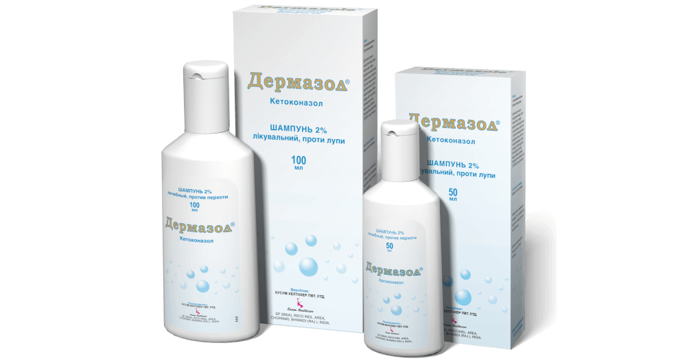

|
FITOCHAY STATUS 1g N25 Kategoriya: - Dori vositalari Ishlab chiqarilish joyi: - O'zbekiston Qadoqda soni: - 25 Ishlab chiqaruvchi: - ZAMONA RANO Noaniqliq haqida habar berish Narxi 18 300 so'mdan / dona |
KOREGA ZAShITA DESEN krem 40g Kategoriya: - Dori vositalari Ishlab chiqarilish joyi: - Buyuk Britaniya Faol modda: Mentol, Parafin jidkiy, Metilvenilefirmaleinovoy kisloti, ko'proq ko'rsatish Ishlab chiqaruvchi: - GLAXOSMITHKLINE TRADING Vakil: - GSK Consumer Healthcare S.A. Narxi 43 900 so'mdan / dona |
DERMAZOL shampun 50ml 2% Kategoriya: - Dermatologik Ishlab chiqarilish joyi: - Hindiston Faol modda: Ketokonazol Ishlab chiqaruvchi: - Kusum Healthcare Pvt. Ltd. Vakil: - Kusum ATX kodi: - D01AC08 Narxi 26 600 so'mdan / dona |
SENSODYNE MGNOVENNIY EFFEKT zubnaya pasta 75ml N1 Kategoriya: - Dori vositalari Ishlab chiqarilish joyi: - Buyuk Britaniya Faol modda: gliserin, Karbomer, Natriya ftorid, ko'proq ko'rsatish Qadoqda soni: - 1 Ishlab chiqaruvchi: - GLAXOSMITHKLINE TRADING Vakil: - GSK Consumer Healthcare S.A. Narxi 46 800 so'mdan / dona |